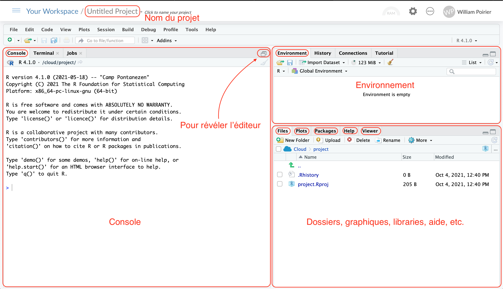

R: Learning by Example
2025-05-29
Preliminaries
R By Example is intended to walk users through transitioning to R from other software. In particular, it supports the course of the same name that I have taught through the ICPSR Summer Program since 2015.
License

This book, in its entirety, is licensed under a Creative Commons Attribution-NonCommercial-ShareAlike 4.0 International License.
In the ensuing pages, we will walk through lots of statistical models with only the the slightest attention paid to the underlying statistical theory. As such, this is not so much a book (or a course) about statistics as it is a book about learning how to run and evaluate models you already know in R.
To following along in the book, you should have the most recent versions of R and RStudio.
Rather than slides, I have decided to distribute this book that has more prose in than slides would permit. The idea is to provide something that will serve as a slightly more comprehensive reference as you start to employ R in your own analyses. There is an ever increasing number of R books out there. The ones I particularly like are:
- John Fox and Sanford Weisberg’s An R Companion to Applied Regression - the first edition of this book is how I learned R in 2002.
- Robert Kabacoff’s R in Action - this is a good “from first principles” book about R that I routinely recommend to people.
- Chester Ismay and Albert Kim’s Statistical Inference via Data Science - has some good introductory chapters that would be particularly useful for this audience.
Getting R and Rstudio
R is an object-oriented statistical programming environment. It remains largely command-line driven. There are a couple of attempts at generating point-and-click GUIs for R, but these are almost necessarily limited in scope and tend to be geared toward undergraduate research methods students - both RCommander and Jamovi are good examples. R is open-source (i.e., free) and downloadable from CRAN. Click the link for your operating system. In Windows, click on the link for base and then the link for “Download R
You should also download Rstudio, an Integrated Development Environment (IDE) for R. This application sits on top of your existing R installation (i.e., it also requires you to install R separately) to provide some nice text editing functions along with some other usefull features. I’ve spent a considerable amount of time using other competing IDEs - WinEDT (a long time ago), TextMate, Atom, Sublime and Microsoft’s VS Code. There were things about all of them that I really liked, but ultimately for someone whose workflow is almost entirely in R, Markdown and LaTeX, there is little reason to move to something else. RStudio is also increasingly becoming a suitable IDE for other languages,too, e.g., Python.
In RStudio, you can change themes (color schemes), fonts and other aspects of the appearance. You can also use (and optionally set) shortcut keys for your own favorite operations, too. Some that I use regularly are:
ctrl +pfinds the matching bracketctrl + shift + eexpands the selection to the matching bracket- I also mapped the “quick add next” operation, which allows you to highlight a single instance of a string and then highlight the next one with the click of a keystroke. Then, you have multiple cursors at each instance that you can use to make multiple changes at once.
Keeping Track of Your Work
In general, I’m a big fan of using RMarkdown documents to keep track of your work. They provide a great format for including both prose (that can explain to your colleagues, readers and even your future self what you did) and R code. It also could then form the basis for a paper or book you could write using RStudio.
I would encourage you to write in RMarkdown files that parallel the chapters of the book, so you can keep track of what you are doing to complete the exercises.
Overview of Rstudio
When first opening Rstudio, you are met with a somewhat complicated array of windows and buttons. Here are the four main area of interest. First, on the upper left corner, we can find the main area of work. This is where you can create, open and write into files. To see it, you first need to open a file. In this book, we are mostly interested in .R files, but note that Rstudio supports multiple languages like, Rmd, LaTeX and even Python. Think of this window as your Word editor, it is where you write your code so that it can be saved for later.
Right bellow the file window is the console. Each time you execute a command from your main code in the second quadrant, it is printed in the console. While you can write commands directly into the console, there is no easy way to save the order of operation you executed from it. It is more useful to think of the console as a place where you can test commands and check on the result of your analysis since it will not be saved into your .R file.
Moving on to the right side of the screen, we can view two sets of panels that give information about your R session. On top, we have three window toggles. The environment is where all the objects that you create are stored might that be data frames, functions, vectors, matrices or lists. It helps you keep track of the objects in your environment such that you don’t overwrite any by mistake. It also gives dimentional information on said objects, like the number of rows of a data frame for example. Next, is the history window in which you can view the whole order of operations executed since Rstudio was opened. Finally the connection window is where you can connect your environment to an external database like SQL.
On the bottom right corner we have another set of windows. The files window allows you to navigate your computer’s directories an open files, althought we recommend doing so from the .R file. The plots window will show a preview of the graphs you produce and will allow you to navigate the history of their production. The packages window provides information about the available packages that you have installed via the function install.packages() and the ones that are loaded via the function library(). The help window will open when you execute the ?function() command and provide information about how to use the function. Finally, the viewer window allows you to view local web content from a static HTML file or a locally ran web application.

Using R
Like Stata and SAS, R has an active user-developer community. This is attractive as the types of models and situations R can deal with is always expanding. Unlike Stata, in R, you have to load the packages you need before you’re able to access the commands within those packages. All openly distributed packages are available from the Comprehensive R Archive Network, though some of them come with the Base version of R. To see what packages you have available, type library() or click on the “Packages” tab in the files panel. There are two related functions that you will need to obtain new packages for R.
install.packages()will download the relevant source code from R and install it on your machine. This step only has to be done once until you upgrade to a new minor (or major) version of R. For example, if you upgrade from 3.5.0 to 3.5.1, all of the packages you downloaded will still be available. In this step, a dialog box will ask you to choose a CRAN mirror - this is one of many sites that maintain complete archives of all of R’s user-developed packages. Usually, the advice is to pick one close to you (or the cloud option).library()will make the commands in the packages you downloaded available to you in the current R session (a new session starts each time R is started and continues until that instance of R is terminated). As suggested this has to be done (when you want to use functions other than those loaded automatically) each time you start R. There is an option to have R load packages automatically on startup by modifying the.RProfilefile (more on that later).
You can accomplish the same thing through the “packages” tab in the files panel. Each package that has been installed has a checkbox next to it. You can load the package by checking the checkbox. There is a search bar to help you locate your package without endless scrolling. There is also an “install” button in the upper right-hand corner of the packages tab. Clicking that will open an install packages dialog where you can type in the name of the package you want to install.
The “object-oriented” nature of R means that you’re generally saving the results of commands into objects that you can access whenever you want and manipulate with other commands. R is a case-sensitive environment, so be careful how you name and access objects in the space and be careful how you call functions lm() \(\neq\) LM().
There are a few tips that don’t really belong anywhere, but are nonetheless important, so I’ll just mention them here and you can refer back when they become relevant.
- In RStudio, if you position your cursor in a line you want to execute (or block text you want to execute), then hit
ctrl+enteron a PC orcommand+enteron the mac, the functions will be automatically executed. - You can return to the command you previously entered in the R console by hitting the “up arrow” (similar to “Page Up” in Stata).
- You can find out what directory R is in by typing
getwd(). - You can set the working directory of R by typing
setwd(path)wherepathis the full path to the directory you want to use. The directories must be separated by forward slashes/and the entire string must be in quotes (either double or single). For example:setwd("C:/users/david/desktop"). You can also do this through the “Session” dropdown menu where you can select “Set Working Directory” as an option. - To see the values in any object, just type that object’s name into the command window and hit enter (or look in the object browser in RStudio).
Assigning Output to Objects
In this section, we will spend a bit of time on the very basics of coding in R. Some of this may seem tedious, but this is a good way of getting to understand how R works and we won’t spend too long here.
R can be used as a big calculator. By typing 2+2 into R, you will get the following output:
## [1] 4After my input of 2+2, R has provided the output of 4, the evaluation of that mathematical expression. R just prints this output to the console. Doing it this way, the output is not saved per se. Notice that you do not have to ask R to “display” the results of operations where in Stata you would have to type display 2+2 to get the same result.
Often times, we want to save the output so we can look at it later. The assignment character in R is <- (the less-than sign directly followed by the minus sign). You may hear me say “X gets 10,” in R, this would translate to
## [1] 10You can also use the = as the assignment character. When I started using R, people wren’t doing this, so I haven’t changed over yet, but the following is an equivalent way of specifying the above statement:
## [1] 10As with any convention that doesn’t matter much, there are dogmatic adherents on either side of the debate. Some argue that the code is easier to read using the arrow. Others argue that using a single keystroke to produce the assignment character is more efficient. In truth, both are probably right. Your choice is really a matter of taste. For this book, we’ve tried to keep to the tidyverse style guide (here) in which they recommend the use of the <- operator. We strongly suggest that once you choose to do something in a certain way, you keep to it. This goes with naming objects and commenting your code as well, the key is consistency. The goal is, after all, for future you or others to look at your code and understand what is going on.
To assign the output of an evaluated function to an object, just put the object on the left-hand side of the arrow and the function on the right-hand side.
Now the object X contains the evaluation of the expression 4+4 or 8. We see the contents of X simply by typing its name at the command prompt and hitting enter. In the above command, we’re assigning the output (or result) of the command 4+4 to X.
## [1] 8There are a few things worth noting here:
- The object does not always save the call - the code that produced the output. Models tend to save this kind of information, but simpler mathematical calculations do not.
- There is no “undo” button and no warning that something is about to be overwritten. The onus is on you to make sure that you keep track of the names of objects you want to keep. Usually, this is not problematic as if you are keeping good track of what you’re doing, you’ll be able to re-generate any previous result easily.
Vectors and Matrices
We can make a vector of numbers by combining a bunch of numbers together using the c() function. This collects the numbers together in a single object.
## [1] 1 2 3 4We can also do math on vectors. For example, we can add a scalar and it will add the scalar to each element of the vector:
## [1] 4 5 6 7The matrix() function allows us to make matrices.
## [,1] [,2]
## [1,] 1 3
## [2,] 2 4The default orientation of matrices is in column-major format, meaning that each column of the matrix is filled in until all of the numbers in the vector have been used. You could also fill in by rows by using the byrow=TRUE argument to the matrix() function.
## [,1] [,2]
## [1,] 1 2
## [2,] 3 4Function Arguments
As we will see throughout this book, each R function can take a number of arguments. These arguments and what they do are detailed in the function’s help file. You can access a function’s help file by typing help matrix or ?matrix; or, you can click on the “Help” tab in the files pane on the left. You can then use the search bar in the upper-right hand corner of the panel to search for a function’s help file.
Arguments can take lots of forms, but the most common are:
- formula - a model specification that takes the form:
outcome ~ covariate1 + covariate2for additive functions andoutcome ~ covariate1*covariate2for conditional or multiplicative functions. - logical - either
TRUEorFALSE(must be in all caps), BTW -TRUEhas a numerical value of 1 andFALSEhas a numerical value of 0.
- string - A character string, must be in quotes (single or double quotes are fine, so long as they match).
- data - Generally a data frame or something that can be coerced to a data frame.
- vector or list - allow multiple values to be passed to a single argument.
For example, looking at the help file for the matrix() function, we see that the first argument data is a vector, nrow and ncol are scalars (single numbers) and byrow is a logical value.
Importing Data
Before we move on to more complicated operations and more intricacies of dealing with data, the one thing everyone wants to know is - “How do I get my data into R?” As it turns out, the answer is - “quite easily.” There are a number of packages in R that can help read in from and write out to other statistical environments. I personally like the rio package. This package is actually a wrapper to lots of different packages for importing and exporting data in other formats. It automatically identifies the data type from its extension and uses the correct importer for the data.
Let’s look at a couple of examples.
The dataset we’ll be using here has three variables - x1, (a numeric variable), x2 (a labeled numeric variable [0=none, 1=some]) and x3 a string variable (“no” and “yes”). I’ve called this dataset r_example.sav (SPSS) and r_example.dta (Stata).
R has lots of different data structures available (e.g., arrays, lists, ect…). The one that we are going to be concerned with right now is the data frame; the R terminology for a dataset. A data frame can have different types of variables in it (i.e., character and numeric). It is rectangular (i.e., all rows have the same number of columns and all columns have the same number of rows). There are some more distinctions that make the data frame special, but we’ll talk about those later.
## load rio package - only need to do this once per R session
library(rio)
## load data, note the relative path to the dataset from the current directory
spss.dat <- import("data/r_example.sav")
## print the contents
spss.dat## x1 x2 x3
## 1 1 0 yes
## 2 2 0 no
## 3 3 1 no
## 4 4 0 yes
## 5 3 0 no
## 6 4 0 yes
## 7 1 1 yes
## 8 2 1 yes
## 9 5 1 no
## 10 6 0 noThere is also an example Stata dataset, which you could read in as follows:
Data Types in R
This is a convenient time to talk about different types of data in R. There are basically three different types of variables - numeric variables, factors and character strings.
- Numeric variables would be something like GDP/capita, age or income (in $). Generally, these variables do not contain labels because they have many unique values. Dummy variables are also numeric with values 0 and 1. R will only do mathematical operations on numeric variables (e.g., mean, variance, etc…).
- Factors are variables like social class or party for which you voted. When you think about how to include variables in a model, factors are variables that you would include by making a set of category dummy variables. Factors in R look like numeric variables with value labels in either Stata or SPSS. That is to say that there is a numbering scheme where each unique label value gets a unique number (all non-labeled values are coded as missing). Unlike in those other programs, R will not let you perform mathematical operations on factors.
- Character strings are simply text. There is no numbering scheme with corresponding labels, the value in each cell is simply that cell’s text, not a number with a corresponding label like in a factor.
Using the rio package, it reads numeric variables with labels as numbers, but it attaches an attribute to the variable called labels which can be used to turn the variable into a factor. Note the difference in the output below between x2 and x3 - x2 is numeric with a labels attribute and x3 is a character string (denoted with chr).
## 'data.frame': 10 obs. of 3 variables:
## $ x1: num 1 2 3 4 3 4 1 2 5 6
## ..- attr(*, "label")= chr "x1"
## ..- attr(*, "format.spss")= chr "F8.2"
## $ x2: num 0 0 1 0 0 0 1 1 1 0
## ..- attr(*, "label")= chr "x2"
## ..- attr(*, "format.spss")= chr "F8.2"
## ..- attr(*, "labels")= Named num [1:2] 0 1
## .. ..- attr(*, "names")= chr [1:2] "none" "some"
## $ x3: chr "yes" "no" "no" "yes" ...
## ..- attr(*, "label")= chr "x3"
## ..- attr(*, "format.spss")= chr "A3"
## ..- attr(*, "display_width")= int 11To turn x2 into a factor, we could use the function factorize() that’s in the rio package.
## 'data.frame': 10 obs. of 4 variables:
## $ x1 : num 1 2 3 4 3 4 1 2 5 6
## ..- attr(*, "label")= chr "x1"
## ..- attr(*, "format.spss")= chr "F8.2"
## $ x2 : num 0 0 1 0 0 0 1 1 1 0
## ..- attr(*, "label")= chr "x2"
## ..- attr(*, "format.spss")= chr "F8.2"
## ..- attr(*, "labels")= Named num [1:2] 0 1
## .. ..- attr(*, "names")= chr [1:2] "none" "some"
## $ x3 : chr "yes" "no" "no" "yes" ...
## ..- attr(*, "label")= chr "x3"
## ..- attr(*, "format.spss")= chr "A3"
## ..- attr(*, "display_width")= int 11
## $ x2_fac: Factor w/ 2 levels "none","some": 1 1 2 1 1 1 2 2 2 1
## ..- attr(*, "label")= chr "x2"Examining Data
There are a few different methods for examining the properties of your data. The first will tell you what type of data are in your data frame and gives a sense of what some representative values are. The str command shows the structure of your dataset along with any attributes of the variables that would be otherwise hidden from view.
## 'data.frame': 10 obs. of 4 variables:
## $ x1 : num 1 2 3 4 3 4 1 2 5 6
## ..- attr(*, "label")= chr "x1"
## ..- attr(*, "format.spss")= chr "F8.2"
## $ x2 : num 0 0 1 0 0 0 1 1 1 0
## ..- attr(*, "label")= chr "x2"
## ..- attr(*, "format.spss")= chr "F8.2"
## ..- attr(*, "labels")= Named num [1:2] 0 1
## .. ..- attr(*, "names")= chr [1:2] "none" "some"
## $ x3 : chr "yes" "no" "no" "yes" ...
## ..- attr(*, "label")= chr "x3"
## ..- attr(*, "format.spss")= chr "A3"
## ..- attr(*, "display_width")= int 11
## $ x2_fac: Factor w/ 2 levels "none","some": 1 1 2 1 1 1 2 2 2 1
## ..- attr(*, "label")= chr "x2"The second method is a more substantive summary. The skimr package has a function called skim_without_charts() that provides a nice summary depending on the variable type.
| Name | spss.dat |
| Number of rows | 10 |
| Number of columns | 4 |
| _______________________ | |
| Column type frequency: | |
| character | 1 |
| factor | 1 |
| numeric | 2 |
| ________________________ | |
| Group variables | None |
Variable type: character
| skim_variable | n_missing | complete_rate | min | max | empty | n_unique | whitespace |
|---|---|---|---|---|---|---|---|
| x3 | 0 | 1 | 2 | 3 | 0 | 2 | 0 |
Variable type: factor
| skim_variable | n_missing | complete_rate | ordered | n_unique | top_counts |
|---|---|---|---|---|---|
| x2_fac | 0 | 1 | FALSE | 2 | non: 6, som: 4 |
Variable type: numeric
| skim_variable | n_missing | complete_rate | mean | sd | p0 | p25 | p50 | p75 | p100 |
|---|---|---|---|---|---|---|---|---|---|
| x1 | 0 | 1 | 3.1 | 1.66 | 1 | 2 | 3 | 4 | 6 |
| x2 | 0 | 1 | 0.4 | 0.52 | 0 | 0 | 0 | 1 | 1 |
Missing Values
In R, missing data are indicated with NA (similar to the ., or .a, .b, etc…, in Stata). The dataset r_example_miss.dta, looks like this in Stata:
. list
+-----------------+
| x1 x2 x3 |
|-----------------|
1. | 1 none yes |
2. | 2 none no |
3. | . some no |
4. | 4 . yes |
5. | 3 none no |
|-----------------|
6. | 4 none yes |
7. | 1 some yes |
8. | 2 some yes |
9. | 5 some no |
10. | 6 none no |
+-----------------+Notice that it looks like values are missing on all three variables. Let’s read the data into R and see what happens.
stata2.dat <- import("data/r_example_miss.dta")
stata2.dat$x2_fac <- rio::factorize(stata2.dat$x2)
stata2.dat## x1 x2 x3 x2_fac
## 1 1 0 yes none
## 2 2 0 no none
## 3 NA 1 no some
## 4 4 NA yes <NA>
## 5 3 0 no none
## 6 4 0 yes none
## 7 1 1 yes some
## 8 2 1 yes some
## 9 5 1 no some
## 10 6 0 no noneNotice that the missing elements are NA.
There are a few different methods for dealing with missing values, though they produce the same statistical result, they have different post-estimation behavior. These are specified through the na.action argument to modeling commands and you can see how these work by using the help functions: ?na.action. In lots of the things we do, we will have to give the argument na.rm=TRUE to remove the missing data from the calculation (i.e., listwise delete).
Filtering with Logical Expressions and Sorting
A logical expression is one that evaluates to either TRUE (the condition is met) or FALSE (the condition is not met). There are a few operators you need to know (which are the same as the operators in Stata or SPSS).
- EQUALITY
==(two equal signs) is the symbol for logical equality.A == Bevaluates toTRUEifAis equivalent toBand evaluates toFALSEotherwise. - INEQUALITY
!=is the command for inequality.A != Bevaluates toTRUEwhenAis not equivalent toB. - AND
&is the conjunction operator.A & Bwould evaluate toTRUEif bothAandBwere met. It would evaluate toFALSEif eitherAand/orBwere not met. - OR
|(the pipe character) is the logical or operator.A | Bwould evaluate toTRUEif eitherAand/orBis met and would evaluate toFALSEonly if neitherAnorBwere met. - NOT
!(the exclamation point) is the character for logical negation.!(A & B)is the mirror image of(A & B)such that the latter evaluates toTRUEwhen the former evaluates toFALSE.
When using these with variables, the conditions for factors and character strings should be specified with characters. With numeric variables, the conditions should be specified using numbers. A few examples will help to illuminate things here.
## [1] TRUE FALSE FALSE TRUE FALSE TRUE TRUE TRUE FALSE FALSE## logical(0)## [1] FALSE FALSE TRUE FALSE FALSE FALSE TRUE TRUE TRUE FALSE## [1] FALSE TRUE FALSE FALSE FALSE FALSE FALSE TRUE FALSE FALSEWorkhorse Functions
Here are sets of useful and widely used functions that will get you running quickly. First, let’s look at some basic statistical functions. The min() and max() functions output the lowest and highest value of a vector.
## [1] 1## [1] 6The which.min() and which.max() functions output the position of the first minimum or maximum value in the vector.
## [1] 1## [1] 10The median, mean, standard deviation and quantiles of a vector can as easily be obtained.
## [1] 3## [1] 3.1## [1] 1.66333## 0% 25% 50% 75% 100%
## 1 2 3 4 6The summary() function outputs a lot of this information in one call (min, max, first and third quantiles, median and mean).
## Min. 1st Qu. Median Mean 3rd Qu. Max.
## 1.0 2.0 3.0 3.1 4.0 6.0Next, we have functions that will allow you to better understand your data. When used on a data.frame, head() and tail() will give an overview of the first and last 6 rows of a dataset respectively.
## x1 x2 x3
## 1 1 0 yes
## 2 2 0 no
## 3 3 1 no
## 4 4 0 yes
## 5 3 0 no
## 6 4 0 yes## x1 x2 x3
## 5 3 0 no
## 6 4 0 yes
## 7 1 1 yes
## 8 2 1 yes
## 9 5 1 no
## 10 6 0 noThis becomes more useful when the number of rows of the data increases substantially. Speaking of which, the nrow() and ncol() functions outputs the number of rows and columns of a data.frame.
## [1] 10## [1] 3The vector counterpart of this is the length() function which outputs the number of elements in a vector. Used on a data.frame, it outputs the number of columns.
## [1] 10## [1] 3When it comes to cleaning data and manipulating it, it’s often times useful to quickly be able to know the names of the columns of a data.frame or the categories included in one of these columns. The function names() outputs, get ready, the column names of a data.frame or any named object.
## [1] "x1" "x2" "x3"The table() function outputs both the unique categories in a vector and their frequency in a single call. This is paramount in checking your work, making sure that your new dummy for education is well coded, for example.
##
## no yes
## 5 5##
## 0 1
## 5 5I just introduced above a new set of functions which deal with logical statements. Indeed, the ifelse() function takes as input a condition, the desired output when true, and the desired output when false. Hence, the above statement reads: when x3 equals ‘’yes’’, output a 1, otherwise output a 0. Note that this function can be nested into itself such that multiple conditions can be added. For example:
##
## 1 2 3 4 5 6
## 2 2 2 2 1 1stata.dat$x1_fruits <- ifelse(stata.dat$x1 < 3, "Banana",
ifelse(stata.dat$x1 %in% c(3, 4), "Melon",
ifelse(stata.dat$x1 >= 5, "Rambutan", NA)))
table(stata.dat$x1_fruits)##
## Banana Melon Rambutan
## 4 4 2The which() function also takes as input a logical statement, but outputs the position of the set of elements for which the condition is true.
## [1] 2 8The next set of functions deal with object classes. We’ve seen that functions can take different types of objects (formulas, strings, logical expressions, etc.), but we might also want to deal with object classes. In its simplest form, a class can be understood as a way of characterizing the information included in an object. Let’s say we look at the x1_fruits variable created earlier. The class() function will output the class of the input vector.
## [1] "character"So, x1_fruits is a character vector, meaning that it contains a letter like information. The four types of classes you are bound to face while working in R are: 1) character, 2) numeric, 3) logical, and 4) factor. Note that, while looking at a variable, the presence of numbers isn’t sufficient to conclude with certainty that R will treat the variable as containing numbers. Indeed, sometimes variables are treated as characters because of the way they were input in the data. Hence, one needs to know how to make R understand the variable correctly. The functions as.character(), as.numeric(), and as.logical() serve this purpose.
## [1] "numeric"##
## 0 1
## 6 4##
## FALSE TRUE
## 6 4Notice how a variable that was a bunch of zeros and ones got transformed into FALSE and TRUE values. This worked because R knows how to understand zeros and ones in terms of logical statements. The same is not true if we wanted to transform fruits into numbers.
## [1] "character"## [1] NA NA NA NA NA NA NA NA NA NAHence, transforming number characters into numbers make sense, transforming logical values into numbers does too, and transforming numbers into characters is no problem. Don’t try to memorize these, after some trial and error you’ll get a feel for it. Lastly, factors allow us to apply an ordering to classes that don’t inherently have one, like characters. For example, let’s say we wanted to induce a preference ordering on the fruit variable. The factor() function takes the root variable and a levels argument that expects a vector consisted of every category included in the root variable in the required order. So, if we prefer bananas over rambutans and rambutans over melons:
##
## Banana Melon Rambutan
## 4 4 2stata.dat$x1_fruits_factor <- factor(stata.dat$x1_fruits,levels=c("Banana","Rambutan","Melon"))
table(stata.dat$x1_fruits_factor)##
## Banana Rambutan Melon
## 4 2 4Notice how, by default, the table() function outputted the categories in alphabetical order. Once we transformed it into a factor with different levels, though, the output of table() reflects the new ordering. Checking the class of an object can also be formulated in a logical statement using is.character(), is.numeric(), is.logical(), is.factor(), is.na(), etc.
## [1] FALSEFinally, some useful functions to generate data. Let’s say you want to create a vector with 25 ones. You can either use the c() function and write 25 ones yourself, or use rep(). What is neat with this function is that you can either repeat an object \(n\) times or each element of an object \(n\) times.
## [1] 1 1 1 1 1 1 1 1 1 1 1 1 1 1 1 1 1 1 1 1 1 1 1 1 1## [1] 1 1 1 1 2 2 2 2 3 3 3 3 4 4 4 4Similarly, seq() allows the creation of sequences, like a vector ranging from 0 to 99 by intervals of 3.
If you want to simulate data coming from a known distribution, you can usually find a function for it within base R. The rnorm() for normal distributions, rbinom() for binomial distributions, rpois() for Poisson distributions, etc.
## [1] 3.010215## [1] 2.716447Exercises
Each chapter of this book will be accompanied by a set of exercises. Some will cover exact application of what is covered in each chapters, and some will go beyond what is explicitly stated in order to both challenge and teach the reader how to navigate R. We strongly advise opening a new exerciseFile.R for each chapter as to both better return your solutions and avoid conflicts between objects and packages.
The
Tidyverseis package of packages that contains multiple functions that ease data manipulation and visualization. Install and load theTidyverse.Creating objects is an important part of the R workflow. Some of the packages from the
Tidyverseship with small datasets, such asdplyrwhich makes available thestarwarsdataset even if you don’t see it inside your environment window. This contains information about the characters from the Star Wars universe. Create a data frame that contains the data from the datasetstarwars.Let’s explore the data: 3.1 What is the class of the variable
species? 3.2 What is the mean and median heigth of Star Wars characters? (Hint: you might want to check the help files with?for themean()andmedian()functions.) 3.3 How many eye colors can be found in theeye_colorvariable? 3.4 Thebirth_yearvariable indicates the year of birth relative the the battle of Yavin (BBY). Hence, abirth_yearof 8 means that the character was born 8 years before the BBY. Who is the oldest character from the dataset? 3.5 Who is the oldest human from the dataset?Tatooine plays a big role in the movies, create a variable that is
TRUEwhen the character’s homeworld is Tatooine andFALSEotherwise. What type is the resulting variable?Using the variable we just created, form a subset of the data that only contains droids from Tatooine and remove the
NAvalues.Let’s now try our hands at a real-world dataset. Import the
wvs6dataset into your environment.A tricky data type in R is the factor. The
wvs6dataset contains multiple variables which are coded as factors. Print out all the possible categories of theeducvariable. 7.1 What type do they appear to be? 7.2 What happens if you transform the variable into a numerical one? (Hint: you need theas.numeric()function.) 7.3 What if you do the same for thecountryvariable? 7.4 Using thedroplevels()and thefactor()functions, create a new variable in which you remove the 0 frequency levels and inverse the ordering of thesoc_classvariable. This should result into a variable withLower classas the first level andUpper classas the last. 7.5 From the variable you created at 7.4, rename the levels of the factor for “LC”, “WC”, “LMC”, “UMC”, and “UC”.The
sacsecval, andresemavalrespectively correspond to a measure of overall secular values and emancipative values. Create an additive index that combines both variables. Make sure that the values from the resulting variable remains between 0 and 1.In the
wvsdataset, what is the country with the highest average age of respondents? (Hint: doing this using base R is quite tedious, we encourage you to use thedplyrfunctions from the Tidyverse.)Let’s try our hand at some
forloops. Create a loop that prints one start (*), then two, then 3, all the way to a specifiedn. For additional fun, try and make it so once it reachesnthe printing goes back to 1, but the indexing needs to bei in 1:((2*n)-1).